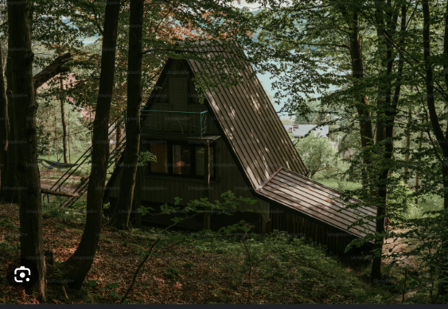

Luego de mucho pensar, Hb decide tomar el camino de la derecha. Al principio todo iba bien, hasta que llegó la noche. En ese momento, tuvo que tomar una decisión difícil: quedarse en la cabaña de madera abandonada o ir a la villa de los Walters, una familia que habitaba en el bosque.
|  |